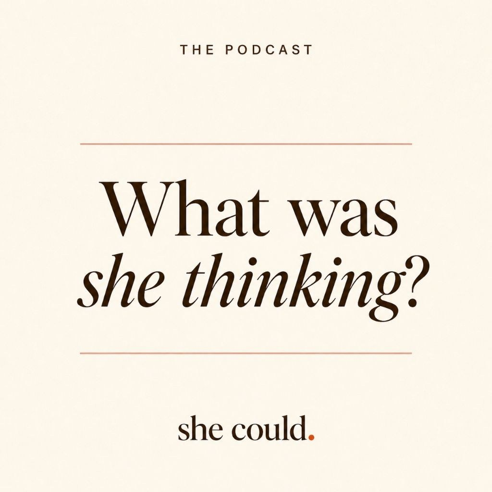

Tell me the story. I’ll design the world it lives in.
For professional offices, hospitality venues and boutiques across the Midlands. Photo-real renders of your actual space — before you spend a dollar. Columbia, SC · on-site locally, remote nationwide.

BeforeToday, daylight

RenderProposed · Holiday, at dusk
Selected work
 Professional office · Proposed design
Professional office · Proposed design
 Hospitality storefront · Proposed design
Hospitality storefront · Proposed design
Designed for the audience and the camera.
Professional office · Proposed design
Historic law office
Established and welcoming — especially after dark, when clients drive past.
Hospitality storefront · Proposed design
Crown & Ash
Lit at dusk, so the lounge glows through the glass and catches the evening crowd.

Podcast & studio setWhat Was She Thinking
The show’s personality comes through in any single frame.
Concept → deliveryOne creative lead
See it before you buyPhoto-real renders
10+ yearsFilm, documentary, brand production
Columbia, SCOn-site and remote
01
Six ways to build the world your audience steps into.
Client words
“Sharla was excellent in providing me with a clear idea for my services. She gave great direction during shooting and even helped me with social media strategy. Her promotion really helped sell my services to new clients.”